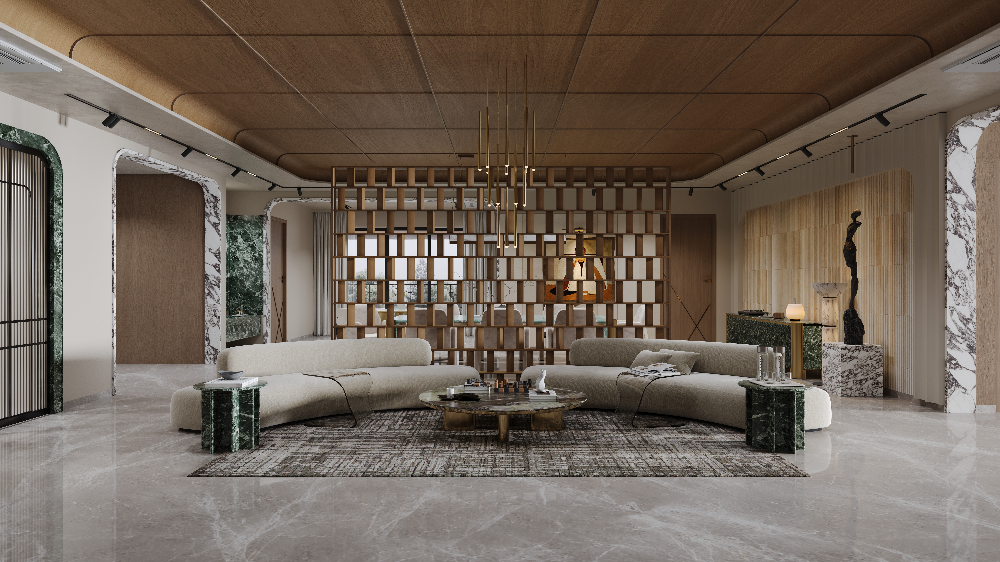
Rich walnut surfaces, sculptural furniture and deep green stone give this residence a strong visual identity. The open living and dining spaces are tied together by a custom timber screen, while the marble-framed openings and layered lighting add depth throughout. Softer seating, natural textures and carefully placed artwork keep the bold materials balanced, creating a home that feels expressive without becoming overwhelming.
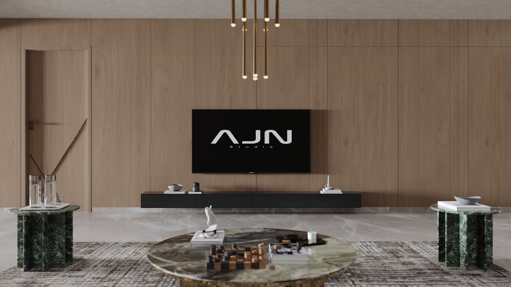
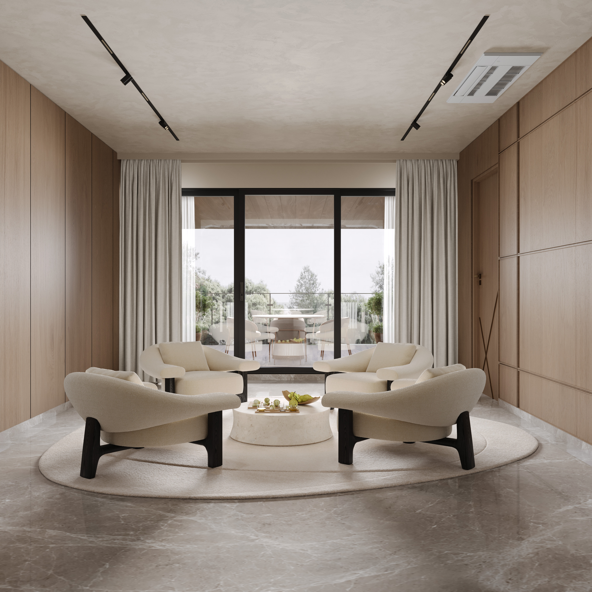
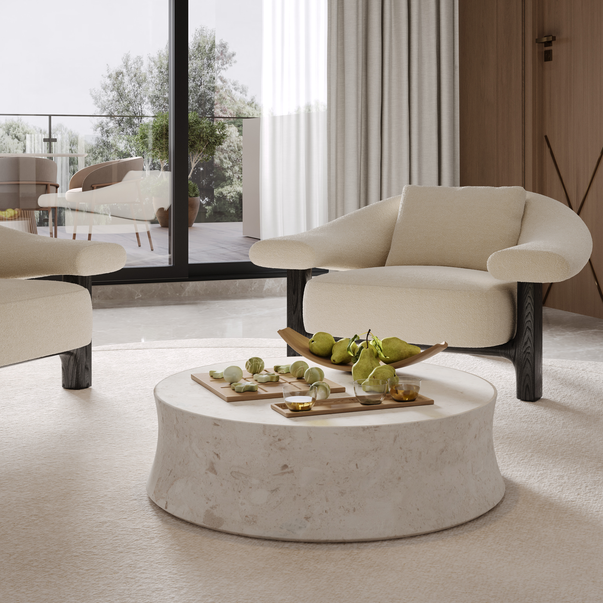
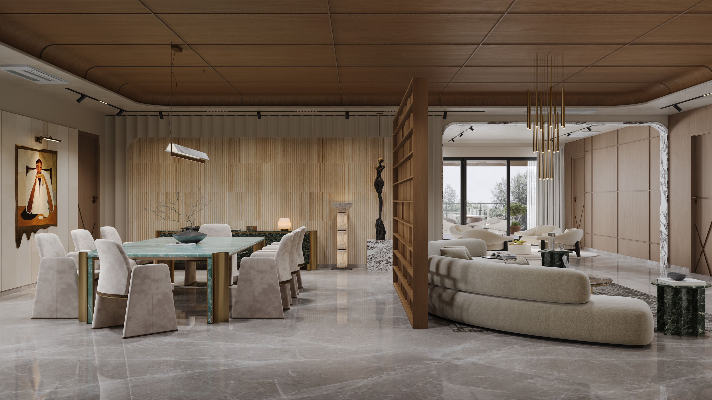
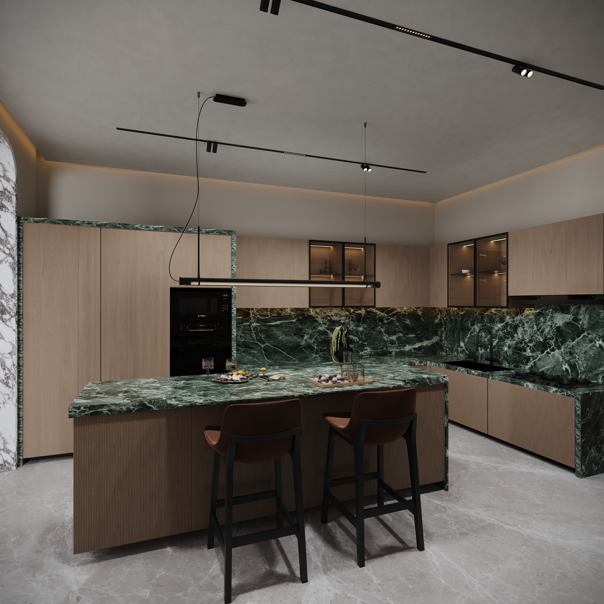
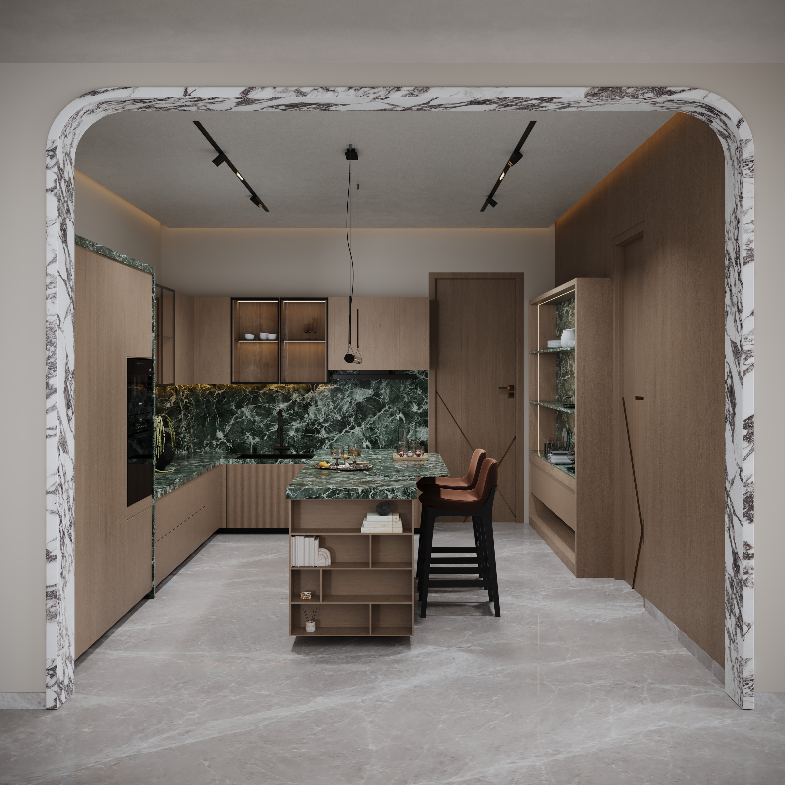
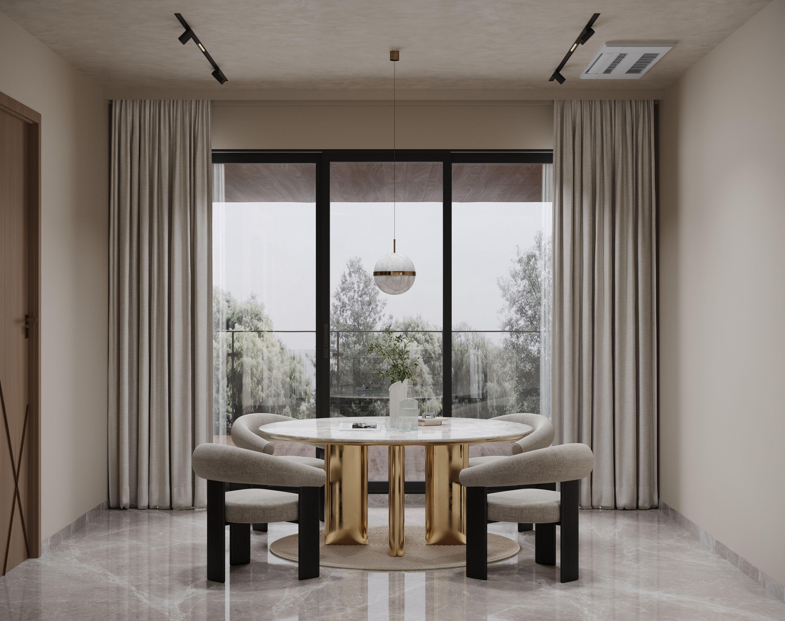
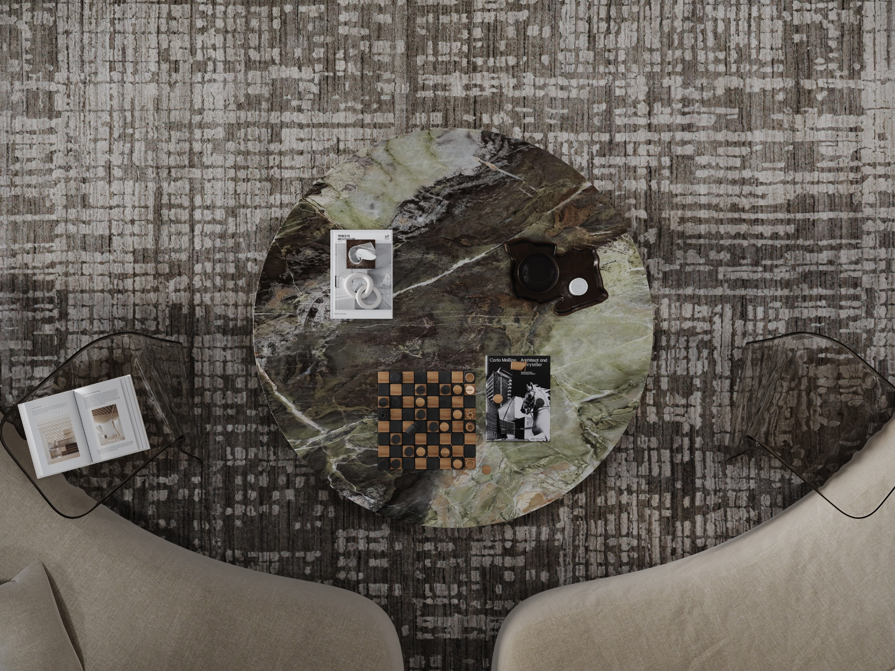
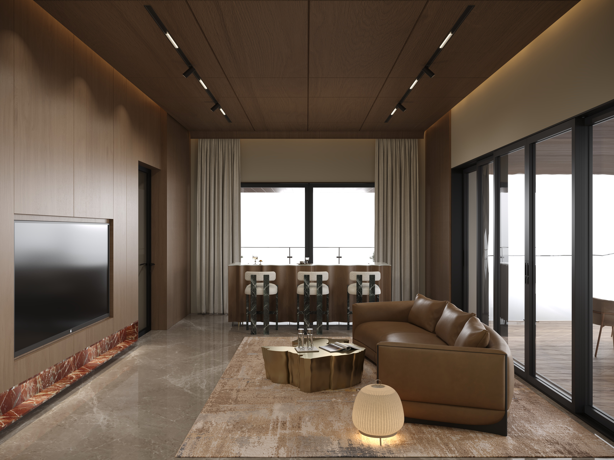
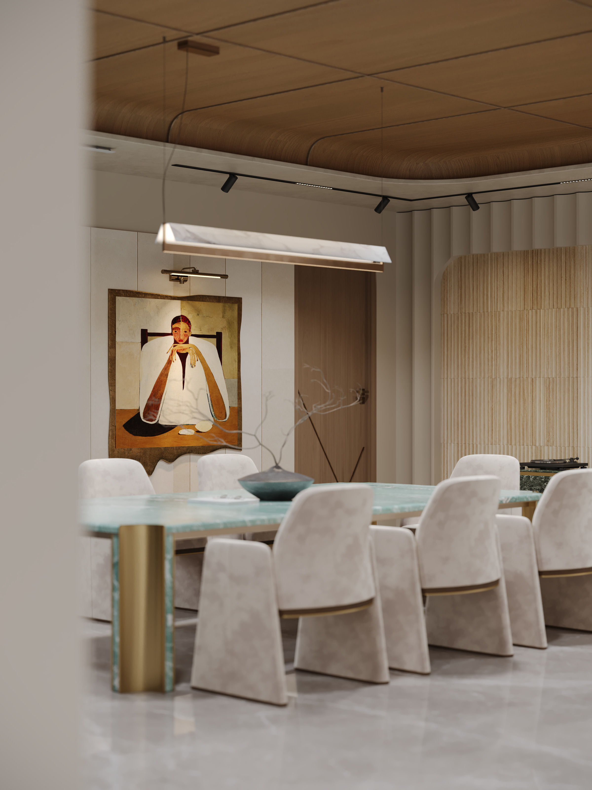
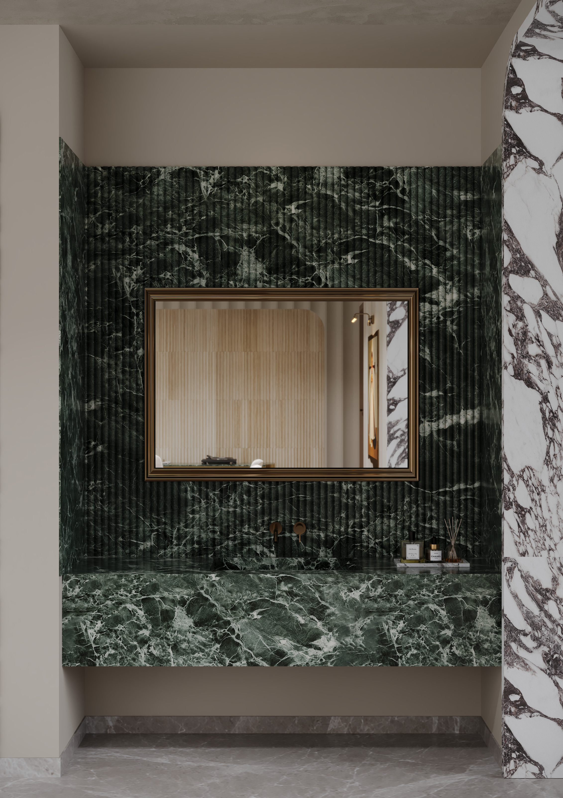
Have a project in mind? Let’s talk about your requirements, references and visual direction.
START A PROJECT